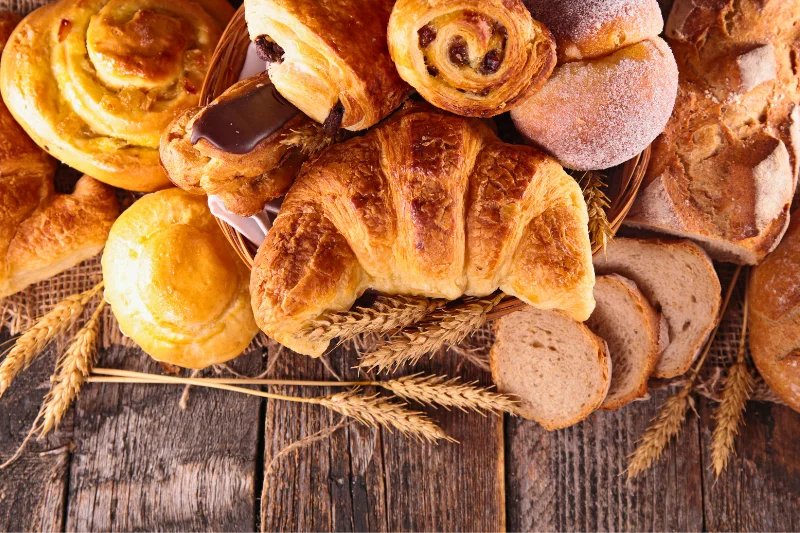

Actualité

À la une
Notre pain burger fait sensation en Guadeloupe
Retour sur notre participation au concours du meilleur burger de Guadeloupe, la vidéo devenue virale sur les réseaux et notre pain burger désormais livré dans de nombreux hôtels de l'île.
Lire l'article
Anti-gaspi

Engagement
Nos paniers surprise avec Gaspiz
Commerçant partenaire de l'application Gaspiz, nous proposons chaque jour 2 paniers surprise à 5€ pour lutter contre le gaspillage alimentaire.
Lire l'article